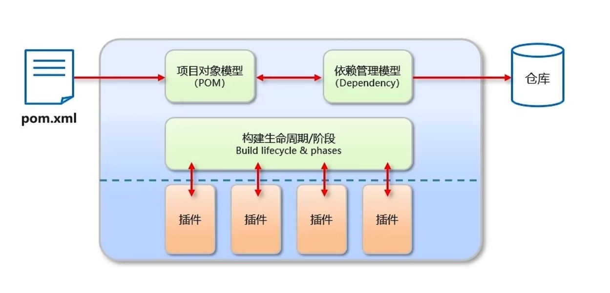

- Maven简介
- Maven安装配置
- Maven基本使用
- IDEA配置Maven
- 依赖管理
Maven简介
Maven是专门用于管理和构建Java项目的工具，它的主要功能有：
- 提供了一套标准化的项目结构
- 提供了一套标准化的构建流程（编译，测试，打包，发布….）
- 提供了一套依赖
Apache Maven是一个项目管理和构建工具，它基于项目对象模型（POM【Project Object Module】）的概念，通过一小段描述信息来管理项目的构建、报告和文档

- 仓库分类：
- 本地仓库：自己计算机上的一个目录
- 中央仓库：由Maven团队维护的全球唯一的仓库
- 远程仓库（私服）：一般由公司团队搭建的私有仓库
Maven基本使用
Maven常用命令
- compile：编译
- clean：清理
- test：测试
- package：打包
- install：安装
Maven生命周期（Maven对项目构建的生命周期划分为3套）
- clean：清理工作
- default：核心工作，例如编译，测试，打包，安装等
- site：产生报告，发布站点等
同一生命周期内，执行后面的命令，前面的所有命令会自动执行
Maven坐标详解
什么是坐标？
- Maven中的坐标是资源的唯一标识
- 使用坐标来定义项目或者引入项目中需要的依赖
Maven坐标的主要组成
- groupId：定义当前Mavenue项目隶属组织名称（通常是域名反写，例如：com.spernxl）
- arrtifactId：定义当前Maven项目名称（通常是模块名称，例如order-service,goods-service）
- version：定义当前项目版本号
1
2
3<groupId>com.spernxl</groupId>
<artifactId>maven-demo</artifactId>
<version>1.0-SNAPSHOT</version>依赖范围
通过设置坐标的依赖范围（scope），可以设置对应jar包的作用范围：编译环境、测试环境、运行环境
1
2
3
4
5
6<dependency>
<groupId>com.spernxl</groupId>
<artifactId>maven-demo</artifactId>
<version>1.0-SNAPSHOT</version>
<scope>test</scope>
</dependency>依赖范围 编译classpath 测试classpath 运行classpath 例子 compile Y Y Y logback test - Y - Junit provided Y Y - servlet-api runtiome - Y Y jdbc驱动 system Y Y - 存储在本地的jar包 默认值：compile